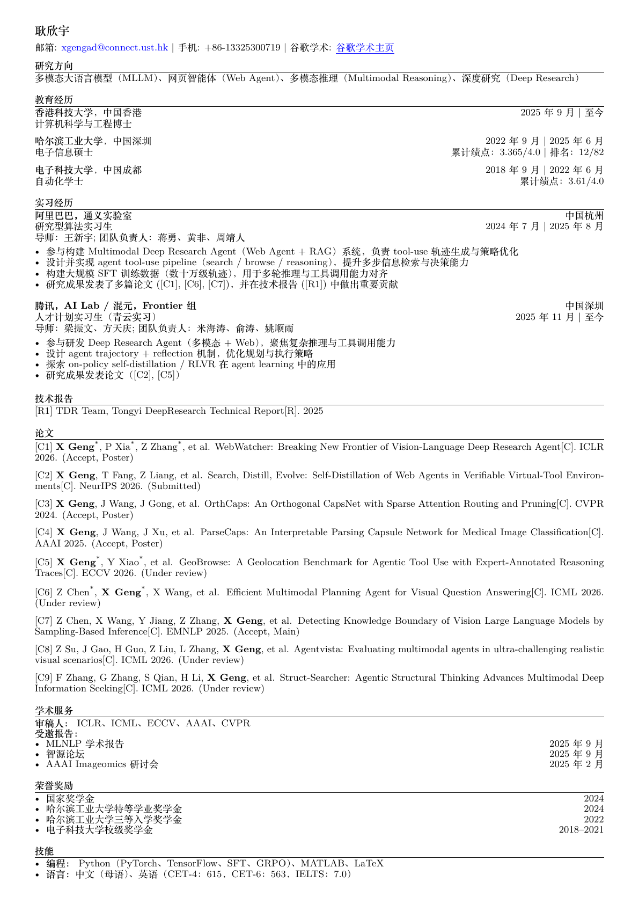

Multimodal Deep Research
Vision-language agents for complex information seeking, visual question answering, and iterative evidence gathering.
Ph.D. Student · Computer Science and Engineering
I work on multimodal large language models, web agents, multimodal reasoning, and deep research systems that combine search, browsing, tool use, and long-horizon decision making.

Research
Vision-language agents for complex information seeking, visual question answering, and iterative evidence gathering.
Tool-use trajectories, reflection, self-distillation, RLVR, and policy optimization for search and browse pipelines.
Reasoning systems that connect perception, retrieval, planning, and answer synthesis over long multi-step tasks.
Publications
X. Geng*, P. Xia*, Z. Zhang*, et al. ICLR 2026, Poster.
X. Geng, T. Fang, Z. Liang, et al. NeurIPS 2026.
X. Geng, J. Wang, J. Gong, et al. CVPR 2024, Poster.
X. Geng, J. Wang, J. Xu, et al. AAAI 2025, Poster.
X. Geng*, Y. Xiao*, et al. ECCV 2026.
Z. Chen*, X. Geng*, X. Wang, et al. ICML 2026.
Z. Chen, X. Wang, Y. Jiang, Z. Zhang, X. Geng, et al. EMNLP 2025, Main.
TDR Team. Technical report, 2025.
Experience
The Hong Kong University of Science and Technology, Hong Kong SAR
Deep research agents, multimodal web agents, trajectory reflection, on-policy self-distillation, and RLVR.
Multimodal Deep Research Agent systems, tool-use trajectory generation, agent search and browse pipelines, and large-scale SFT data construction.
Harbin Institute of Technology, Shenzhen. GPA 3.365/4.0, ranked 12/82.
University of Electronic Science and Technology of China. GPA 3.61/4.0.
Service
Awards
Contact